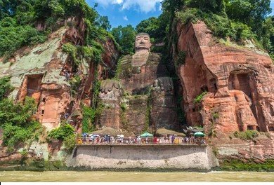
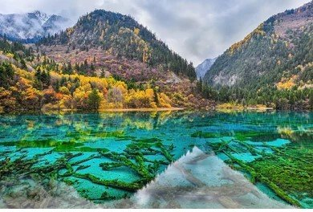

Seakan belum lengkap jika berkunjung ke tempat wisata terindah di China, tapi belum berburu foto dan menikmati jalan kaki di Tembok Besar China. Tembok Besar China atau Wanli Changcheng merupakan sebuah benteng luas yang terdiri dari banyak tembok sejajar. Dibangun selama sekitar dua milenium melintasi China utara dan Mongolia selatan.
PesanGunung Emei memiliki tempat wisata terindah di China berikutnya. Termasuk area pemandangan Buddha Raksasa Leshan. Kuil Buddha pertama di China ini dibangun di Provinsi Sichuan pada abad ke-1 M di lingkungan yang indah dan penuh hijaunya alam.
Pesan
The Forbidden City atau Kota Terlarang memiliki nama lain 故宫 Gugong 'Former Palace' merupakan jantung istana China. Ini adalah kompleks istana kekaisaran dari dinasti Ming dan Qing (1368-1912) di Beijing, China.
PesanKali ini tempat wisata terindah di China yang wajib dikunjungi dengan nuansa alam yang segar nan sejuk. Jiuzhaigou atau Lembah Jiuzhai adalah negeri dongeng yang begitu indah. Menampilkan pemandangan alam yang menawan dari danau berwarna-warni, air terjun yang spektakuler, dan pegunungan.
Pesan